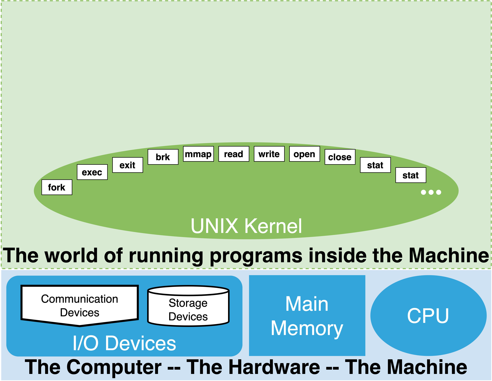
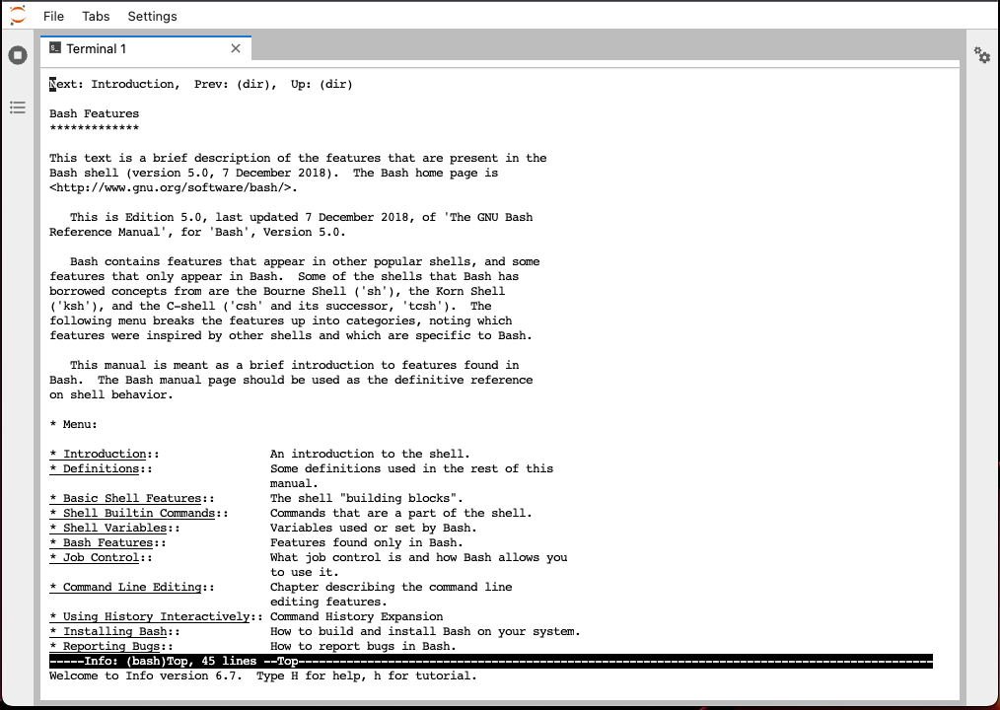
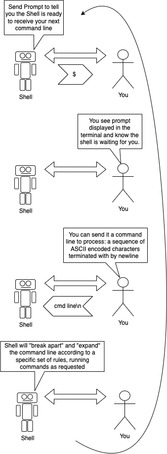
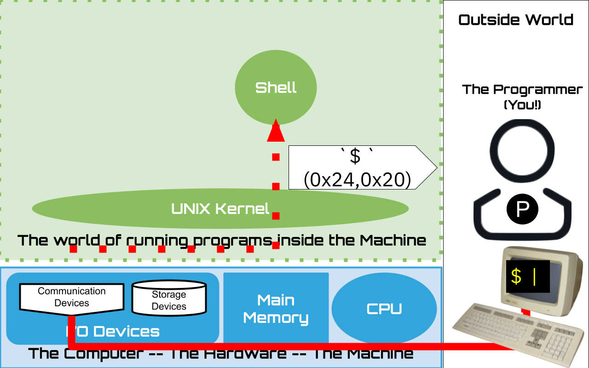

4. The Shell - Part I: Having an ASCII conversation with the OS#
As we read in the Unix introduction a key feature of Unix is its command line interface that was developed for ASCII terminals devices. Our goal in this chapter is to understand the general model of the shell and how to start working in the terminal environment. If you have not done so be sure to have read the sections on the Unix Kernel, User Programs, how we visualize a running Unix system, the introduction to Terminal Emulators and the chapter introducing Files and Directories.
Tip
It is a good idea to read this chapter with a terminal connection open so that you can explore the material as you read it. Instructions and guidance on how to do this can be found in the “How to read this book” chapter.
4.1. Our interface to the Kernel#
As discussed the core functionality of the Unix operating system is implemented by the Kernel. However, the Kernel does not have any support for humans to directly interact with it. The primary responsibility of the kernel is to provide utilities that simplify the writing and running of application/user programs. This is where the shell comes in. The shell acts as our primary point of contact/interface, not only to the kernel, but also to all other installed programs.
4.1.1. System calls#
The UNIX kernel provides a large set of functions that can be called by a running program. Remember, on UNIX we call a running program a “process”. The kernel functions that a process can request are called “system calls”. In the next part of this book, we will look in more detail at how a process can issue a request for the kernel to execute a system call. For the moment, it is sufficient to know that each system call, which we identify by names, can only be requested by an already running program. When a process makes a request to execute a system call, it can pass arguments to the system call. Similarly, on completion of the system call the kernel can return values back to the process. Operating system kernels can provide hundreds of system calls. In the diagram above, the white labeled boxes within the kernel oval illustrate a small subset of important UNIX kernel system calls.
The UNIX kernel, through its system calls, provides the ability for a process to:
create and manage files and directories
create and manage other processes
manage and work with Input and Output devices
communicate between processes, both on the same computer and across computers
The graphical human-computer interfaces that we use on our smart phones, laptops and desktop computers are designed to utilize touch or pointing devices (like a mouse). These interfaces allow us to find and launch programs, open files, and navigate the computer to do our daily work. The primary goal of such interfaces is ease of use. The shell, however, is text based, and is designed with programmers in mind. Specifically, its syntax and commands are designed in such a way that they form an “extensible” programming language. Here, extensible refers to the ability for users to add to and extend it with ease. This language allows a human user to not only use the facilities of the kernel, but also to automate their daily tasks, and efficiently conduct the various forms of data processing programmers often do.
4.2. Bash#
Over the years, there have been many variants of the shell program that have been developed not only for Unix, but other operating systems as well (see comparison of shells). While there are differences between the various Unix shell programs, the basic model of interaction we cover in this chapter is largely the same across all of them. However, for a more detailed exploration of the shell and its syntax, we will be specifically focusing on the Bourne Again Shell (BASH), as it is the default shell for Linux - the version of Unix we use throughout this book.
4.2.1. Documentation and manuals#
4.2.2. man bash#
It is a Unix tradition that programs installed on the system, like Bash, include documentation on how they are used. To access the manual pages you use the man program eg. man man would bring up the documentation about the manual itself. So man bash will bring up the manual page for the bash shell. You can find detailed coverage of the functionality and syntax of bash in the manual. After we cover some basics it will be much easier to read and understand the Bash manual page, as it assumes that you understand some basic UNIX and generic shell concepts.
4.2.2.1. info bash#
{kind=link}
Another really useful way to read and navigate UNIX documentation and manuals is the info documentation system. Try info info to learn about how to use it. The advantage of the info system is that it provides a more friendly book like experience compared to the man command. To read the info version of the bash documentation try info bash. To exit from info press the q key for quit.
4.2.2.2. bash builtin help#
Finally, there is a built in help command to bash that we will be using throughout this chapter as well.
4.3. Shell Session#
Keeping in mind that that ASCII terminals were the original devices created for humans to interactively work with computers, the shell is designed to provide a managed environment for communication with a human at a terminal. Thus, the human and the shell are really exchanging bytes of information, encoded in ASCII. For every new terminal connection, software directs the kernel to start an instance of a shell program to interact with a user at that terminal. We consider this to be the start of a shell “session”. The session ends when either the communication between the shell and the terminal is disconnected, or because the user purposefully exits the shell.
4.3.1. Terminal Windows and the Shell#
Today, of course, we rarely use physical terminals anymore. Rather, on our physical client computers (eg. laptops, desktops, tablets, etc) we can start many terminal emulator windows to establish a shell session for each (see below). Each session will stay active until we exit or close the session and kill the associated shell. Since each window is connected to its own shell, they represent independent “conversations” in which we can do different things concurrently.
The important thing is we don’t need to do anything special, simply connecting to the UNIX system via a terminal starts a shell for us to interact with.
Tip
While you are learning how to work with bash it can be really useful to keep a terminal open in which you keep the info page for bash open while you use another terminal shell session to do your exploring.
4.4. Line oriented conversation#
 The way we interact with the shell can be thought of as a structured, interactive, "conversation". The conversation is a series of back and forth exchanges. We, the user, type in a request in the form of a "command line". In response, the shell takes some actions, and generates a particular response, as byte values, which are sent back to the terminal. The terminal translates the response byte values into ASCII characters, displaying/printing the appropriate images of the ascii characters to the screen for the user to read.4.4.1. Lines#
Given our use of ASCII encoding, the definition of a “line”, in Unix, is very precise. It is a series of byte values terminated by a single ‘new-line/line-feed’ value. Using an ASCII table, we see that the byte value for the new-line character is 0b10000010 in binary, or expressed more concisely in hex as 0xA. The common shorthand notation for the newline byte value is \n. Pressing the return or enter key, depending on your keyboard, within a terminal window will generate this value. We will simply refer to the key that generates a ‘\n’ as the enter key.
When \n is received by the shell, it will begin working on processing the line as a command. In this way, we say the shell is “line oriented”. If the user presses \n with no other preceding characters, it is considered a blank or empty line.
In the other direction, the terminal emulator is configured to take the appropriate action when it receives a \n. That is to say, it moves the cursor to the next lower position in the window (scrolling if configured to do so) and moves it to the left edge of the new line (again, scrolling the window if configured to do so).
Tip
There are two basic modes that the UNIX kernel can use when delivering bytes sent from the terminal connection to the program running on the connection; character and line. In character mode, the bytes of data from the terminal are sent along to the running program as soon as they are received, including the \n. In line (or buffered) mode, the kernel stores up the characters to be sent until a \n is received, at which point it sends the complete line with the \n to the running program. Line mode is typically the default. In the context of our discussion of the shell, this mode setting is not very relevant, as the shell’s behavior is largely unchanged by this setting. Since the shell is a line-oriented program, it is designed to process whole lines at a time - regardless of whether the line was received in its entirety, or character by character. However, it is good to keep this distinction in mind to avoid confusion when we are writing programs that are not line-oriented, and therefore expect to receive characters as soon as the keys are pressed by the user.
4.4.2. The Prompt#
 We now know that our interaction with the shell largely resembles a conversation, and similar to a conversation, we need some way to determine that the other party is ready to listen. The "prompt string," or simply, the "prompt," is the shell's way of visually telling us it is ready to talk. The prompt is a configurable sequence of characters, beginning on a new line, indicating to us that the shell is ready to recieve a line. When a new connection is established, it sends the prompt to the terminal so that we know that it is ready for the session/conversation to begin. The classic prompt string is often either the dollar symbol, `$` or greater than sign `>` followed by a single space character. In our illustrations, and in the default configuration we use, the prompt is set to be the classic dollar sign followed by a space.Tip
Today, most systems default to much more complicated prompt strings, where the prompt might state your user name, the date or time, what your current working directory is, etc. Later, when we learn about shell variables, we will find that there is a special variable, PS1, whose value is used to generate the prompt string every time the shell wants to send it. Given that every terminal session/window is connected to separate shells it can be very useful to set each with a unique prompt to help keep you organized eg. export PS1='Term 1> '.
If you are interested in the details use the following man bash to pull up the manual page for bash and look for the section called “Prompting”.
4.5. Our first shell session#
Before we move on to a more formal examination of the shell’s operation, why don’t we poke it and see what happens? Perhaps the simplest thing we can do is send it an empty line by pressing enter on its own. We should find that the terminal will move to the next line, and display the prompt again. It may seem silly to examine such a simple exchange, but if we take a moment to think carefully about what is going on behind the scenes, we will find a new level of understanding that will help us to build a more complete mental model of how the shell and terminal interact.
What happens after we press and release the enter key? The terminal sends - through the Unix kernel - a byte destined to the instance of the shell program that our terminal is virtually connected to. Precisely, it sends the binary pattern 0b00001010 or in hex 0xa as the left most sub-figure (A) illustrates. The figure shows both the \n human-readable ASCII symbol, and the underlying byte value. In other diagrams we might stop showing the byte values and only show the ASCII human-readable symbol. It is, however, important to remember that under the covers, the terminal and shell are really just exchanging raw binary values that use the ASCII standard to encode the data. If we were to use special device, such as a logic analyzer, to peek at the electical wires that make up the pathways that are transmitting data back and forth between the computer and the terminal, we would find electrical values that represent the binary encoding of the characters being exchanged.
The middle figure (B), is a cartoon depiction of the shell’s behavior after receiving the blank line. As we have seen, it is programmed to do “nothing”, simply sending the prompt back to the terminal to notify the user that it - the shell - is ready for another command line to be sent. If you are interested in why the terminal displays a \n, causing the prompt sent by the shell to be on the next line of the terminal, read the fyi ECHO box below.
Tip
ECHO: You might be wondering why it is that the characters you type at the keyboard of the terminal appear on the screen of the terminal as well. We now know that pressing a key sends the data to the Unix kernel, and then to the program running (such as the shell). However, no part of this exchange offers any reason why we would see these characters. Does the shell send back a copy of what it receives? No, it does not.
Rather, it is the UNIX kernel that is typically configured, by default, to send a copy of what it receives on a specific terminal connection back to the terminal itself. This setting is called terminal ECHO mode. So by default, even before the Kernel sends data up to the destination program, it sends a copy back to the terminal so that the user can see what they typed. This includes the \n that the user presses to indicate the end of the command line. Hence, in this default mode, any data sent back as the result of an action taken by the shell will appear on a new line. Programs can ask the kernel to disable this setting to have more control of what the user sees.
As a matter of fact, consistent with the style of Unix, there is a command you can issue to have the kernel adjust the setting for your terminal connection, including turning off the echo behavior (stty -echo to turn off and stty echo to turn back on). Doing so lets you observe what is really being sent back in response to your command, and not what the kernel automatically generates as echo data. Note, things might get confusing quickly if you turn echo off. But Unix is all about understanding how things work, and taking advantage of the power to control them. If you want to know more, try man stty - but be warned, you will find that communicating via a terminal is actually quite a bit more complex than it might seem. There is a lot of history, and with history come and skeletons buried here and there, and the kernel is cooking the communications quite a bit ;-)
4.6. Command lines#
UNIX command lines can get quite complex. As a matter of fact, one of the hallmarks of UNIX expertise is the ability to compose long command lines that chain together many commands. Such ability develops in time as you get familar working with the shell, and like any other ability, building expertise starts with the small steps. Learning to issue simple command lines is the first step to ruling the UNIX world.
The simplest command lines, other than the blank command line, are composed of a single “word”. The following are three examples of single word command lines, using the commands: help, pwd and ls.
4.6.1. Three simple examples#
The help command is a “builtin” command that will provide you some help :-)
The pwd command is a builtin command that prints the shell’s current working directory. We will discuss what the working directory is a little later.
The ls command is a standard UNIX external command that lists the contents of a directory. As we will find out later, ls is a very powerful command that lets us explore the existing directories and files.
4.7. Command line processing#
|
|
When the shell receives a command line, it goes through a series of steps to process it. The rules of this processing define what is called the Shell Grammar. The Shell Grammar and builtin commands form an entire programming language. Programs written in this language are called Shell Scripts, and are used extensively to automate all sorts of tasks. Over the years, one learns more and more subtle aspects of the shell grammar and its usage. While it is possible to use the shell without knowing its underlying grammar, having a working knowledge can really help in understanding why the shell behaves the way it does, and in demystifying its somewhat strange syntax.
The figure on the right illustrates the flow of command line processing. We will be working our way through the various steps in this section.
4.7.1. Interactive vs non-interactive (scripts)#
There are two ways in which we can use the shell: interactively or non-interactively. In either case, the core operation of the shell is unchanged – processing command lines. The difference lies in the source of the commands processed by the shell. In the interactive mode, the commands are coming from a human through a terminal connection. In non-interactive mode, rather than a human typing the command lines at a terminal, the commands are read from a file. In the interactive case, after each command line is executed the shell sends the prompt to the human and waits for them to send the next command line. In non-interactive mode, the command lines are being read from a shell script file. A shell script is simply a file containing several shell command lines. In this mode, the command lines in the file are immediately executed one after the other, bypassing the need for the shell to prompt or wait.
While our focus in this chapter is interactive use of the shell, our understanding of how command lines are processed applies equally to writing and executing shell scripts.
4.7.2. Overview: The six steps of command line processing#
In the remainder of this chapter, we will build up our working knowledge of how the shell processes command lines and grammar. Let’s begin by breaking down command line processing into the following six steps:
Splitting: break up (split) the line into “blank” separated words (computer scientists also call these tokens)
perform expansions
parse redirections
execute simple commands
optionally wait for command to complete
print prompt and wait for new command line if in interactive mode
Control Operator |
Description |
|---|---|
newline |
End of line |
|| |
Or list operator |
&& |
And list operator |
; |
Sequential list operator |
| |
Pipe Operator |
\(\&\) |
Background Operator |
( |
Subshell list begin Operator |
) |
Subshell list end Operator |
;; |
Case statement end matching Operator |
;& |
Case statement fall through Operator |
;;& |
Case statement continue matching Operator |
4.7.3. Step 1: Breaking down a “Command line” into Simple Commands and Arguments#
In this step, the shell splits the command line into a set of tokens that form “simple commands”. Several simple commands can make up a single command line. The common boundary that separates tokens are “blanks”. Blanks are space and tab characters (blanks). In the ASCII code, space characters are encoded with a byte value of 0x20 and a tab is encoded by 0x09. So, a sequence of one more of these two characters will cause the shell to split what is before the sequence and what is after the sequence into two separate tokens.
In addition to the blank space and tab characters, the following characters | & ; ( ) < > newline will also indicate the separation of tokens. Together, these characters are known as the shell “metacharacters”. In time, we will learn about how these characters affect the commands to be executed. Some will let us combine simple commands in various ways, while others will affect how the command is executed.
4.7.3.1. Command versus Arguments#
The first token of simple command is the name of the command to execute. The following tokens in the set will be passed to the command as arguments. To know where the arguments of a particular simple command end, the shell looks for one of the following “control” operators. Notice that some of the metacharacters, | & ; ( ) and newline itself both separate tokens and terminate the tokens of simple command. Using the control characters allows us to chain independent simple commands together.
4.7.3.3. Simple Command Line Splitting examples#
Lets look at a few examples of command lines and see if we can distinguish the commands from the arguments.
To help us denote spaces, tabs, and newlines, we will use the following symbols respectively: \ , \t and \n.
Single word simple command
echo\n
Breakdown:
Tokens:
echo
Command Name: echo
Explanation: Like our previous examples, this command line is composed of a single, simple, one-word command. In this case, the ending newline terminates both the set of tokens that form our command, and the line itself. The command is the
echocommand.echois a bash builtin command that prints back its arguments followed by a newline (seehelp echo). Given that we are not passing any additional arguments, we expect echo to simply print a blank line.
command with one argument
echo\ hello\n
Breakdown:
Tokens:
echo
hello
Command Name: echo
Arguments:
hello
Explanation: Here, our command line contains a single simple command, which is composed of two tokens seperated by a single space. The first token is the command, and the second is the first and only argument to the command.
command with multiple arguments using multiple blanks as separators
\t\ echo\ hello\ \ goodbye\ \t\ me\ again\ \t\n
Breakdown:
Tokens:
echo
hello
goodbye
me
again
Command Name: echo
Arguments:
hello
goodbye
me
again
Explanation: Here, our command line contains a single simple command, which is composed of five tokens seperated by various combinations of spaces and tabs. To begin, we have a tab and space preceeding the first token. Then, we have our first token,
echowhich is our command. The next space separatesechofrom thehello. Two spaces then separatehellofromgoodbye. Then, the sequence of space, tab, space separategoodbyefromme. A single space seperatesmefromagain.againis terminated as a token by the following space, tab and newline. So, it is important to note that when the shell runs echo, the seperating blanks will be eliminated, and only the tokens will be passed to echo as individual arguments.
4.7.3.4. Quotes and Command Line Splitting#
There are times that one might want to include spaces or tabs in an argument to a command. For example, let’s say we want to use echo to print the following as a single argument, including the spaces (not three arguments; hello, ..., and goodbye).
hello ... goodbye
To do this, the shell allows us to use quotes prevent the splitting of tokens. The area enclosed in either double (“”) or single (‘’) quotes will be treated as a single token. Later, we will explore how the shell’s expansion behavior treats double and single quotes differently, and why we might choose one over the other in a given situation. However, this distinction in behavior does not apply to this example. So, to send the strings above to echo, as a single argument, we could use either of the the following command lines.
4.7.3.4.1. Escaping blanks#
For finer control of the shell’s treatment of blank characters, a shell programmer has the ability to “escape” individual blank characters. Escaped blank characters will no longer be treated like a blank, but instead will be treated like a non-blank character. To do this, we insert a backslash in front of the space or tab we want to escape.
For example:
4.7.3.5. Summary#
The above may seem intimidating at first, but it is important to remember that the commands we utilize most often are surprisingly simple. Many of the most commonly used lines consist of one simple command, often with no arguments or, at most, a few arguments separated by single spaces. The following are examples of the kind of commands that one might typically use.
In all of the above cases, the line splitting stage of command line processing is very simple and intuitive.
4.7.3.6. Command line history#
Bash keeps a history of all the command lines we have executed. Learning to view and navigate this history can really help speed up our daily work, and in some cases recover lost work. We will introduce some of the basics of using this history to help you work more efficiently. If you’d like to learn more, you can find more details about working with your bash history here:
Using the bash history https://www.gnu.org/software/bash/manual/bash.html#Using-History-Interactively
searching the history https://www.gnu.org/software/bash/manual/bash.html#Searching
keyboard short cuts for navigating the history https://www.gnu.org/software/bash/manual/bash.html#Commands-For-History
To view the entire history we can use the history command.
To rerun a particular command in the history, you can enter the exclamation character, ! followed by the history number, n, of the command line. For example, to rerun the command numbered 2, you would do the following:
A shortcut for the last command is !!. Eg
Bash also provides methods to allow you to avoid recording commands in the history. The defaut setting is that command lines whose first character is a space will not be included in the history, and duplicate commands will also be omitted. (See HISTIGNORE and HISTCONTROL in the bash manual for more details on how to control and modify this behavior). For example, if we do not want our use of the history command to “pollute” our history, we would add a space to the front of the line. Eg.
Finally, perhaps the most important aspect for a beginner to note is the ability to use key sequences to:
go backward in the history :
previous-historygo forward in the history :
next-historysearch history backwards :
reverse-search-historysearch history forwards :
forward-search-history
Each of these abilities are “bound” to various key sequences. Usually, previous and next will be mapped to your arrow keys. If you want to learn what the default “bindings” are (what key sequences will cause one of the above abilities), you can use the following commands:
The above output can seem very criptic. Here is a quick and dirty explanation. Search the bash manual for “key bindings” for more details.
\Cmeans press the control key\emeans press the escape key-means that while pressing the preceding key, press and release the next key listed. Eg.\C-pmeans press and hold down the control key, then press and release thepkey.if there is no
-present, then you press and release the keys as a sequence. Eg.\eOAmeans press and release the escape key, then press and release the capital o key (O), followed by pressing and releasing the capital a key (A).
The best way to learn more about these features, and use them to your advantage, is to play around with them! Eg. try out all of the prior commands, then use the history key binding to navigate the history and re-run some commands.
4.7.4. Step 2: Perform Expansions#
After the shell has split a command line into tokens, it performs “expansion” on the tokens. An expansion is the substitution of some parts of a token with various other values. To identify which tokens require expansion, and which type of expansion to perform, the shell looks for specific special control characters.
Expansions are a powerful tool in the hands of a command line programmer, but they can seem unfamiliar and overwhelming at first glance. To start, we will focus on understanding the three most common types of expansions. In time, as you gain a greater familiarity with the shell, we encourage you to explore others.
See the introduction paragraphs here https://man7.org/linux/man-pages/man1/bash.1.html#EXPANSION, and here https://www.gnu.org/software/bash/manual/bash.html#Shell-Expansions for and more detailed overview.
4.7.4.1. Nine Command line Expansions#
Below is a brief overview of all nine expansions, and our recommendations on the priority order in which you may want to explore them.
4.7.4.1.1. Brace Expansion#
Priority: You can wait to learn this one.
References:
Synopsis: Provides the ability to expand a “template” token in to multiple tokens.
Examples:
4.7.4.1.2. Tilde Expansion#
Priority: Simple and worth knowning
Synopsis: Expands the tilde (
~) into the path of your home directory. In time, you will be navigating and moving through various directories, and it proves very useful to have a shortcut to the path of your home directory.References: https://www.gnu.org/software/bash/manual/bash.html#Tilde-Expansion, https://man7.org/linux/man-pages/man1/bash.1.html#EXPANSION (see Tilde Expansion)
Examples:
4.7.4.1.3. Parameter and Variable Expansion#
Priority: Important to know basics - the rest can wait till later
Synopsis: Like programming languages, the shell supports the notion of a variable that is identified by a “name” and has a “value”. Shell variables are actually a special case, and a subset of a what are called “shell parameters”. We will focus specifically on variables for now. The shell provides certain, special, built-in variables such as “RANDOM” - whose value expands to a random number. Later, we will come to know and utilize another very important built-in - the “PATH” variable. There are several ways that we can introduce our own variables, and assign them a value. The simplest is a command line of the form:
name=value. During Parameter Expansion, the$followed by name, will trigger parameter expansion (optionally, the name can be enclosed in braces{name}). The token will then be expanded to the value if the named variable exists. Otherwise the token will be simply removed. The shell provides all kinds of fancy ways of manipulating and transforming the value of a variable during expansions, such as deleting or substituting portions, but we will leave that for later. Finally, shell variables can have attributes associated with them. One important attribute marks a variable as exported. We will see later that exported variables are passed to new programs as part of their initial “environment”.References:
Examples:
4.7.4.1.4. Command Substitution#
Priority: useful but you can wait to learn about it
Synopsis: You can specify that the output of a command should be subsituted for its name. To trigger this behaviour, like parameter expansion, you use the dollar character
$but follow it with the command to run enclosed in brackets eg.$(command).References:
Examples:
4.7.4.1.5. Arithmetic Expansion#
Priority: Low. Useful for doing simple math and writing loops which we will cover later.
Synopsis: Bash supports evaluation of basic arithmetic expressions as part of the expansions it performs. To trigger this expansion, you must enclose the expression in double round brackets, prefixed by the
$character. Eg.$((expression)). Two particularly nice features are the support for bitwise operators, and for arbitrary bases. Knowing how to use these features allows you to quickly calculate base conversions, and use bitwise operators to express values.References
Examples:
Tip
While Bash lets us express values in arbitrary bases as input for arithmetic expressions, it uses base ten for all expanded output values. To get around this and display a value in a base other than 10, we can use the shell’s builtin printf command. printf supports printing values in base 10, base 8, and importantly, base 16. Eg.
$ printf "%d %o %x\n" $((10#255)) $((10#255)) $((10#255))
255 377 ff
$
4.7.4.1.6. Process Substitution#
Priority: low.
Synopsis: This is a pretty subtle feature that lets you run commands, treating them as files. To understand what this means will require us to better understand what processes and files are, and how they are represented in a UNIX system.
References:
Examples
4.7.4.1.7. Word Splitting on Expansion#
Priority: low.
Synopsis: After the shell has done parameter expansion, command substitution, and arithmetic expansion, it will do another round of word splitting.
References:
Examples
4.7.4.1.8. Filename Expansion#
Priority: Important to know the basics but the subtle aspects can be left for later.
Synopsis: A very useful feature of the shell is the ability to provide templates, or patterns, that will be expanded into the names of files and directories that exist and match these patterns. The way a pattern is stated, and the way it is matched, can get quite subtle and complex. The basic use, however, is easy, and can be a huge time saver. After the preceding expansions are done and the second round of word splitting is complete, the shell will scan what remains, looking for a special set of characters it recognizes as pattern characters. The most useful of these is the star
*. The star will be substituted for any sequence of characters. As such, it is often called the “wildcard character”, since it matches anything. The shell will then look to see if there are files or directories that match the token, substituting the patterns as necessary. If matching names exist, then it will replace the single token with any matches found. While this can sound complicated, in practice, the simple uses are straightforward and can be most easily understood by studying examples. You will really want to play with this.References:
Examples:
4.7.4.1.9. Quote Removal#
Priority: simple and does what you expect
Synopsis: Finally, any quotes and back-slashes that are not within quotes themselves, or escaped, will be removed. We generally use quotes to control word splitting and expansions (see below) This simply is the phase that removes quotes from the tokens as expected.
References:
Examples:
4.7.4.2. Quoting and Expansions#
Quotes let us control expansions, similar to how we could use quotes to stop commandline splitting. If we want to make sure that no expansions or splitting occurs over a portion of our command line, we can enclose it in single quotes ' '. If we want some expansions to occur - but no splitting - then we can use double quotes " ".
4.7.4.3. Single quotes#
So, when we want a sequence of characters to be treated, as a literal, exactly as we typed them, we enclose them in single quotes. This suppresses all splitting and expansions.
4.7.4.4. Double quotes#
Doubles quotes provide us with a happy medium in between no quotes and single quotes. They let us ensure that the enclosed text will be treated as a single token, however, certain expansions are still processed prior to the command being executed. All expansions that use the $ as a prefix will still occur.
4.7.5. Step 3: Parse Redirections#
To fully understand what it means to parse redirections, we must have a more complete understanding of how commands are run, and of the UNIX I/O model – how a program can conduct input and output. This understanding will take us a little time, as it involves concepts such as Processes, Streams and Files, and how they interrelate. At this point, we take a simple view that we will build upon in time.
4.7.5.1. Processes#
As we proceed, our understanding of what a process is will become more and more advanced. For the moment, our simple working definition will be defined as any running program on a system (excluding the kernel). The shell we interact with is a process, and the commands that we run from the shell run either within the shell process, or as new processes. We will look at this distinction in more detail when we discuss internal built-in versus external commands. Regardless, the commands we issue run as a process.
The Parse Redirections step is all about controlling the source and destination of a process’s input and output.
4.7.5.2. Streams: Standard Input, Output and Error#
UNIX provides three default “streams” that a process can use for its input and output. The default streams are called: Standard Input, Standard Output and Standard Error. A process can ignore these if it wants - but most commands, by default, use these streams. A stream is a connection to a source or destination for reading or writing bytes. A process reads bytes from a stream via read calls to the kernel. Such a stream is an input stream. Similarly, a stream that a process can write bytes to, via write kernel calls, is an output stream. As implied by the name, a stream is like a “flow” of bytes. Reading bytes from an input stream successively gets bytes from the source it is connected to. Writing bytes to a stream successively sends more and more bytes to the connected destination.
4.7.5.3. ASCII streams#
What the bytes “mean” or what will be done with them is up to the process. Most of the daily UNIX commands we use assume ASCII line oriented data. This means that most commands expect that the bytes they read from their standard input will be bytes that encode ASCII lines of data. Similarly we can expect most commands to write ASCII lines of data to their standard output and error streams.
4.7.5.3.1. Standard Error#
The UNIX designers knew that it is very common to have commands produce “normal” output and “error” output. To support this separation, they decided to make it standard that processes get both a standard output, and an error stream.
By convention, when a developer is creating UNIX commands, they write them to send their “normal” output to the standard out stream. When the programmer of a command wants to send error messages or warning messages, they use the standard error stream. This allows someone using a command to easily direct normal output to one destination, and error output to another. Eg. they might decide they want to ignore and hide all warning messages by redirecting the error stream to a different destination. While, for the most part, we don’t normally use this extra flexibility, there are times when it proves very handy.
4.7.5.4. Streams and Files#
But, where exactly do the bytes for a stream come from, or go to? A common phrase that you may hear is that in UNIX everything is a file. From this perspective, streams are connections to files that allow a command to read or write the data of the file.
The designers of UNIX decided that they would try and represent all locations that might serve as a source or destination of data as files. This includes even devices - such as terminals. To this end, the UNIX kernel represents the majority of the devices of a computer as files that a stream can be connected to. Reading from an input stream connected to a device “file” gets data from that device. Writing to an output stream connected to a device file sends data to the device.
4.7.5.5. Opening streams and File Descriptors#
To connect a stream, a program makes an “open” kernel call. As part of the open call, the program passes the path name of the file to connect the stream to, and also specifies if the connection is for input or output (or both). If successful, the kernel will establish the connection.
For every process, or running program, the kernel maintains a table of open streams. This table is called a file descriptor table. Each entry in the table is either empty or not empty. If empty, the entry does not hold a description of an open stream. If it is not empty, then it contains the information that describes an open stream. The kernel can then use this descriptor information to operate on the stream, eg. read or write bytes to it.
When an open call is made, the kernel scans the table for the next empty location and stores the descriptor information about the newly opened stream into that location. The index of this newly populated table entry is returned back to the process.
Historically, these indexes are themselves called File Descriptor numbers. All of the kernel operations on a stream - such as read and write - require a file descriptor so that the kernel knows what stream to operate on.
The first three file descriptors; 0, 1, and 2 are where connections for standard input, output and error are expected to be.
Tip
The UNIX kernel also provides other operations that let a process control its file descriptors. This includes the ability to close a file and mark a descriptor as empty via the close system call. It also lets a process control its table of file descriptors via system calls such as dup and dup2 that duplicate/copy table entries.
4.7.5.6. Terminals and Streams#
As we read, an ASCII terminal provides a natural way for humans to both receive and send ASCII, line-oriented data. When we connect to a UNIX system via a new terminal, the kernel starts a shell for us, and connects its standard streams to the particular device file that represents our terminal. When the shell writes bytes - such as the prompt - to its standard output, we see this output in the terminal that the shell is “connected” to. Similarly, when we type characters into the terminal, the shell will receive them when it reads from its standard input.
4.7.5.7. Defaults#
When the shell runs a command, it establishes what the command’s standard input, output, and error streams will be connected to. The default behavior is to connect them to the same streams that the shell is connected to. In most cases, this will be the terminal that the shell is interacting with. For this reason, the input and output of a command, by default, come from and go to the terminal we are working within.
4.7.5.8. Overriding the defaults#
Once steps 1 and 2 of command line processing have completed, the shell has identified one or more commands, along with arguments, that we want executed. In addition to using commands and their arguments to control its behavior, the shell also gives us the ability to control where the input and output streams for a program might come from and go to.
As stated above, if we don’t use any of the special redirection support, then the default behavior will be used. If, however, we use the redirection syntax, then we can have the shell control what file descriptors a command will have open, and where they will be connected to before they run. While there are many advanced uses of the redirection syntax, basic usage is straightforward.
When discussing command line splitting, we introduced that < and > are metacharacters. Their primary use is to specify redirections. The greater than character, >, is used to control output stream redirection. Conversely, the less than, < character is used to control input stream redirection.
The following examples introduce the basics. See the references for details of the syntax and more advanced uses.
References:
4.7.5.9. Redirection Examples#
In these examples we will use the date, ls, cat, and file commands.
The
filecommand tells the “type” of the file that we specify as an argument. We will use it to distinguish a device file from a regular file.The
catcommand, by default, when no arguments are specified, reads bytes from the standard input stream and writes them to the standard output stream.The
lscommand, as we have seen, lists the contents of the specified directory to standard output. By default, if no arguments are given, thenlswill list the contents of the current working directory.Finally the
datecommand, if no arguments are given, prints the current date and time to the standard output stream.
4.7.5.9.1. Standard output and redirection#
Let’s start with the basics. date
A command line of the date command alone displays its output to us. But why? Further, how can we change this?
The bash process that launches the date command - as a new process - provides this new process with a copy of its open streams. An interactive bash process that is connected to a terminal will have its streams:
standard input stream (fd 0),
standard output (fd 1), and
standard error (fd 2)
All of which are connected to a device file that the kernel provides to represent the terminal the bash process was started from.
As it turns out, we can use a command line to determine what files a process’s standard streams are connected to on Linux. Specifically, the following will let us determine what files are connected to the standard streams of the bash process we are interacting with:
ls -l /proc/$$/fd/{0..2}
We will defer understanding exactly how this command line works until later, when we discuss process identifiers.
Indeed, we see that it is a “character special” file. Which is the type of special file UNIX uses to represent terminals. With this in mind, let’s explore the standard output redirection.
Using the redirection syntax, the following demonstrates what happens implicitly in the default behavior.
Namely, the process that is spawned to run date inherits its standard output destination from the shell process that spawned it. Therefore, the same file that the shell process’s standard output is connected to, will be connected to the standard output of the date process.
Now, using what we know, we can ask the shell to set the destination for standard output to a different file. Doing so ensures that any output the command sends to its standard output stream (fd 1) will automatically be sent to the new destination. Eg.
Notice that by providing our own path name for the destination file, the shell:
created the new file
ran the date command in a new process with the new file connected to the process’s standard output
As a result, we don’t see any output from date > mydate. Instead, we see that the new file exists, and we assume it contains the output from running date. To confirm this, we can use the cat command. Passing file names as arguments to cat causes it to open the specified files, and copy their contents to standard output.
Which means that the above is the equivalent to:
As you can see, given that “everything is a file”, the cat command - which simply copies bytes to its standard output - becomes very powerful given redirection.
Using redirection, how could we copy the contents of mydate to a file called mydate.old?
4.7.5.9.1.1. Appending to a file#
Before we go on to look at standard input redirection, let’s look at what happens if we redirect to an existing file. When we use the > syntax:
If the file does not exist, the shell will create a new file and direct all output of the specified command into that file.
However, if the file does exist, it will open the file and truncate it’s contents before setting the file up as the standard output. In other words, redirecting to an existing normal file will replace the file’s entire contents with the new output.
For example:
However, there are times that we might want to add to the end of an existing file, rather than truncating it and replacing its contents. To do this, we use two greater than symbols instead of one. Eg. date >> mydate. In this case, the shell will not truncate the file. Instead, it will open the file for appending, ensuring that the output of the new command is inserted at the current end of the file.
Note
nocolobber: As we saw, the default behavior when we redirect output to an existing file is to truncate and replace its contents. In other words, we silently “clobber” the file. You can override this default behavior so that an error is reported if a redirection would “clobber” the contents of an existing file. See https://www.gnu.org/software/bash/manual/bash.html#Redirecting-Output and https://www.gnu.org/software/bash/manual/bash.html#The-Set-Builtin (specifically the -C option)
4.7.5.9.2. Standard Input redirection#
Similar to standard output redirection, we can also ask the shell to override the file that is connected to a command’s standard input stream (fd 0). The symbol we use for this is the less than character <.
For these examples, we need to now look more carefully at how UNIX programs deal with input. When we provide no arguments to cat it will read bytes from standard input and send its contents to standard output. Given what we know then we can copy bytes from our terminal connection to a file by simply running.
Now any line we send from the terminal, connected to the standard input of cat, will be copied to its standard output, which again is the terminal. As such we see a copy of the line back on the terminal.
Now every line we type will continue to be sent to cat and hence get sent back to the terminal
To end the cat process, and return back to interacting with the shell, we must ask the kernel to simulate an “end of file”. To do this, we can press the control key and d at the terminal (‘ctrl-d’). This tells the kernel to signal to cat that its standard input stream is at its end. This, in turn, causes cat to exit, allowing us to continue interacting with bash.
So, using redirection, we can employ cat to send data from our terminal to a file.
Conversely, we can use cat and redirection to send the data from the file back to the terminal.
And, of course, use cat append to the file
Finally, we can combine both input and output redirection to copy regular files.
We can specify basic redirection in any order we like.
4.7.5.9.3. Pipes#
The UNIX kernel provides another very powerful model for using redirection: pipes. The basic idea is to allow the output from one running program to be connected to the input of another running program. Given what we learned about the UNIX model so far, it may be no surprise that a pipe is a file. Specifically, it is a kernel-provided special file that combines the input and output redirection of two processes.
The shell offers special syntax for exploiting pipes, including syntax to start and connect several programs to form a chain of processes. We call the resulting chain of processes a “pipeline”. Pipelines are a hallmark of the UNIX command line environment, and we discuss them more detail in the Pipelines section.
4.7.5.9.4. Standard Error redirection#
Shells also typically permit you to independently redirect standard error from standard output. In bash, this can be accomplished by the more general syntax n>, where n is a file descriptor number. Using this syntax, we can redirect standard error with 2>
For example, lets assume that the file foo does not exist. When we run cat foo mydate, cat will send an error message to standard error stating that the file foo does not exist, before proceeding to open mydate and send its contents to standard output.
To redirect the error output to an separate file, we can use the following:
Similarly, we can append using n>>.
Tip
In addition to the devices files that represent hardware such as terminals, printers, etc., the kernel also provides some really useful special files that we can use. Here are a few: 1)/dev/null - anything written to this file is thrown away. This can be really useful when you want to silence the output of a command. 2) /dev/zero - This file is an infinite stream of zero valued bytes. 3)/dev/random - This file is an infinite stream of random valued bytes. In time, you will find that such files - combined with standard UNIX commands and redirection - provide many powerful utilities.
4.7.6. Step 4: Execute the command#
Once we reach step 4 of command line processing, the shell will have:
identified the names of commands to be executed
identified a set of arguments, if any, to pass to the commands
determined how to direct the input and output streams of the command(s)
As an example, consider the following command line:
ls /etc > ${HOME}/etc.txt
At the start of step 4, the above will have been broken down into the execution of a single command:
command name: ls
arguments:
/etc
redirections:
standard out: /home/jovyan/etc.txt
Where
${HOME}triggered variable expansion. The value of theHOMEshell variable is the path name of the users home directory. In our case, it happens to be/home/jovyan. This could be a different value depending on the UNIX system you are on, and your user name.
The goal now is to “execute” the command, passing the arguments with the appropriate redirection setup.
Important
The way this step works is critical to the flexibility and power the shell provides. It is why, as a programmer, you can easily extend and customize the UNIX command line environment with the programs and scripts you write.
Let’s recall the flow chart of command line processing, focusing now on the sub-steps of command execution.
Let’s take a closer look at our example command line. The following is an outline of how execution would proceed in terms of the flowchart of sub-steps.
DECISION 1: The command name
lsdoes not have a/in it, so we would proceed from decision one to decision two.DECISIONS 2 & 3: As it turns out,
lsis not a user shellfunction, nor is it abuiltincommand. So, we will proceed to decision four.DECISION 4: In our case,
lsmatches the name of the file/usr/bin/ls. This match is found because the location/usr/binis listed in our PATH variable. As such, the commandlstriggers step B: “execute as external command”STEP B: The shell requests the kernel to start the executable
/usr/bin/lsas a new process.with
/etcpassed as the first argument to the new process andwith the standard output of this process being directed to a file
/home/jovyan/etc.txt.
Assuming all goes well, we would end up at decision 7.
DECISION 7: By default all commands are started synchronously, so we would proceed to the final read step.
The shell would wait for the newly created
lsprocess to exit, gathering its exit status.
At this point, we don’t know how exactly to verify the above, nor do we know the detailed meaning of each decision or step. The following is a more in depth discussion of the execution sub-steps and how they interact.
4.7.6.1. Builtin vs Externals#
The two core types of command execution are:
builtin (steps A)
external (step B)
4.7.6.1.1. Builtins#
Builtin commands are those that are directly part of the shell program. In other words, the shell has a name of an internal command (builtin) that matches the command name specified.
Examples of these include: help, echo, cd, print. To see what builtin commands are available, you can use the help command.
As stated in the output of the help command, you can use help <cmd> to get more information about a particular command.
Important
Note, the help command also points you to other great resources (the info and man commands)
4.7.6.1.2. External “Shell Commands”#
Perhaps one of the coolest things about the shell, and more generally UNIX, is the way everything is broken down into small building blocks. Rather than building the majority of the UNIX commands into the shell, the designers choose to provide an easy way to automatically find and launch external programs. As matter of fact, philosophically, the original idea was to keep the number of builtins as small as possible.
In this way, the shell’s scope of responsibility remains specific - to provide the syntax for interacting with a human user, and for launching additional commands as processes. Thus, the external programs that one adds to the system can each focus on adding a single new ability. Eg. A program that lists the contents of a directory to its standard output (ls), a program that copies its standard input stream to its standard output stream (cat), a program that lists all the current processes (ps).
This “separation of concerns” not only allows for a great deal of flexibility in adding commands, it also means that one can have several different versions of shell programs. In this case, each shell version may provide its own take on the syntax, while maintaining the ability to reuse the existing commands.
This separation of concerns approach empowers and encourages programmers:
A programmer can easily grow the system by adding a new “command”
A programmer can tailor each new command for a given task.
A programmer can easily override the default commands by installing their own programs (which are found before the standard ones)
Over the years, the flexibility of this approach and the popularity of UNIX has lead to the development of a very large set of programs that one can add to the system and treat as commands. Although they are often referred to as “Shell Commands” they are not really builtin to any given shell.
Today, when people talk about knowing UNIX commands, they are generally referring to a set of external programs that have evolved into a standard. The following Wikipedia page documents such a list.
4.7.6.1.3. Locating External commands#
There are two ways to have the shell run an external file as a program:
by using the pathname of a file as the command
by using the name of a file that is in one of the directories listed in the value of the PATH shell variable.
4.7.6.1.3.1. Commands as pathnames#
One way to execute an external command, indicated by DECISION 1 on the flow chart, is to use the “path” name of the file we want to execute as a command. Recall that pathname of a file in UNIX is a name that uses /’s to indicate its name within the tree of existing directories and files. DECISION 1 is really saying that if the command name of the command line is something that “looks” like a path name, then assume that it is. In particular, ask the kernel to start a new process from the named file.
Absolute and Relative Paths
In the prior chapter, Organizing and Managing Information, we discussed how a file is named as a pathname starting at the Root (/) of the directory tree. Such paths whose names begin with / are called absolute paths.
To ease the burden of naming files, UNIX also provides what are called relative paths. Rather than starting a path name all the way from the root of the directory tree, a path can be named relative. As is discussed in the Environment section, each process has associated with it a “current working directory”. We can think of this as a pointer to a specific directory in the directory tree. When a process asks the kernel to open or lookup a path that does not start with a leading / the kernel will assume that the path is relative to the process’s current working directory.
When we start a new terminal session, the shell process started has its current working directory initially set to our user’s HOME directory. Eg. For the jovyan user in our UNIX environment, it would be /home/jovyan. The pwd command can be used to print what the shell’s current working directory is, and the cd command can be used to change it to another directory.
So if we use mydir/myfile as a shell command, the shell will ask the kernel to locate an external command. Given the lack of a leading /, the kernel will assume that we are looking for a file, myfile in a directory called mydir which is under the the shell process’s current working directory. If the working directory is /home/jovyan, then the full path of the file we are trying to locate would be /home/jovyan/mydir/myfile.
Notice, however, if our current working directory was /home/jovyan/mydir and we wanted to have the shell execute, as an external, the file myfile by pathname, it would not work to simply type myfile as the command. DECISION 1 explicitly states that in order to treat the command name as a pathname for an external program, the command name must contain a /. As it turns out, every directory in UNIX contains two hidden directories . and ... Where . is a shortcut for the name of the directory and .. is a short cut for the name of the parent of the directory. Using this feature, we can construct a name of a file within the current working directory that contains a slash by using ./ as a prefix. Eg. to trigger the explicit request to execute myfile in the current directory as an external command, we can use ./myfile.
Details of how path names are decoded can be found in the “path_resolution” man page (man path_resolution).
4.7.6.1.3.2. Commands as files within the PATH list#
Using pathnames lets us ask the shell to try and execute a file as a process. However, this is not sufficient to make execution of external programs feel like builtin commands.
Notice, there is another pathway in the flow chart for reaching STEP B - external command execution. Specifically, if the command name is not a user defined function (see Functions), or a shell builtin command, then the shell will look to see if the command is the name of a file within a set of directories. The set of directories is the current value of the shell’s PATH variable. Specifically, the PATH variable is treated as a colon separated list of directories to be searched for files that will be launched as external commands. The list is searched from left to right. If the name of the command matches the name of a file within the directory being searched, then the file will be treated as an external command and the shell will attempt to execute it. Note, the first match will terminate the search. In the event that directories later in the path also contain a file that matches the command name, they will not be considered.
Notice three critical points to this design:
Files within the set of directories listed in PATH do not require use of path names to be executed. This makes them feel more like builtin commands. Simply adding files to one of the directories listed by the PATH variable is enough to make the program become a “command”.
The PATH variable is just an ordinary shell variable that can be updated anytime one likes. It can be set to any value(s). Thus, you can easily add directories of files to it, and/or remove directories from it. Further, remember that every terminal connection has an independent shell process connected to it, each with their own version of the PATH variable. As such, you can override the PATH in one shell process while leaving it untouched in another.
By controlling the order of directories in PATH, you can override which version of a file should be launched as the command. In this way, you can provide alternative “personalities” to the commands by providing your own versions in directories that appear before the directories with the standard versions.
Let’s explore this in a little more detail by examining how the cat command gets located. First, lets see if cat is a built in by asking for help about it.
Sure enough, cat does not seem to be a built in. Let’s look at the PATH variable to see what is going on.
We see that the PATH variable lists several directories (each directory is an independent element of the list where elements are separated by a :). While we could use ls to search each element, the shell builtin command type has a convenient option -a that displays all the locations containing an executable (see help type for more details).
We see that there are two directories listed in the current PATH varaibles value that contain a file named cat. Given that /usr/bin appears first in the path, from left to right, /usr/bin/cat is the file that will currently be executed when we use cat as a command name. We can use the -p option to the type command to confirm this, as this option will cause type to print the file that currently will be executed.
Remember, all files in all directories of the PATH variable can be treated as commands. The following lists all of them.
We can use the following command to get an approximate count.
That’s quite a lot. One of the joys of UNIX is learning to poke around and explore. We encourage you to explore the directories and files that you find.
Let’s now exploit the flexibility of the shell to provide our own version of cat. For this example, we need to use a few commands and ideas that we have not yet covered. For these, a brief explanation will suffice for now, and we will go into more detail later on.
Let’s first begin by creating a directory within our home directory, called mybin, where we will place our new version of cat. To do this, we will use the mkdir command
Our new cat command will be a very simple “shell script”, which is simply a file that contains shell commands. To do this, we will use echo and redirection to create the file and put the contents into it.
To enable the kernel to execute this file as a shell script, we will do the following:
We will use a special syntax for the first line. This syntax will tell the kernel what program it should launch as a new process to “interpret” the rest of the file’s lines as a script. In our case it will be
/bin/bash, since our script will need to be interpreted as bash command lines.The second thing we must do is mark the meta-data of file as executable, so that the kernel will identify it as a file to execute. To do this, we will use the
chmod +xcommand.
The second line of the file will be a simple shell command that sends a message to standard output.
Step 1. create the file with the first line being #!/bin/bash
Add a second line to display our message to the standard output stream.
Let’s use cat to confirm that our file has the two lines we want in it.
Now, lets use chmod +x to mark our file as an executable.
Using ls -l we can inspect the meta-data of the our new file and confirm that it is now marked as executable. Notice the x’s in the data to the left. We will discuss file permissions in more detail later.
Ok, let’s start by trying to run our new version of cat using its path name.
Great, now let’s add our mybin directory to PATH and see what happens.
Let’s check to see what the path looks like now
Let’s now try using cat as our command
But, of course, this does not work as we put the directory at the end. Let’s see what type has to say.
Let’s be more careful and put our directory at be beginning of the directory list in the PATH variable.
Trying again…
Cool! But now, can we use the system version of cat? Well, we can use the full path eg. /usr/bin/cat or we can put PATH back to the way it was.
Try me
Now, using the above as an example, try and add an external command that is a simple shell script called hello. When you use hello as a command, the the string “Hello there!” should be printed to the standard output stream.
4.7.6.1.4. Executing External commands (Creating Processes)#
Now that we have seen how files can be located and treated as external commands by the shell, let’s look a little closer at how they are executed as new processes. In order to do this, we need to take a step back and try and understand a little more about what processes and programs are, and their relationship to each other and the Operating System kernel.
4.7.6.1.4.1. The Birth of Processes#
In the introduction chapter we visualized a set of processes, where each was represented as a bubble above the UNIX kernel. Each was labeled with the “program” it is running. Further, we said that each has its own “lifetime” – it gets started and can run for some arbitrary amount of time, and once that time is up it terminates eg. exits. This is the common model for a running “App” - running on our phones, laptops, or other devices - that we have all grown accustomed to.
On UNIX, a running App is a process. Remember that on UNIX a shell process is automatically started for us when we open a terminal connection. This shell process, in turn, lets us start other processes. This is surprisingly similar to the way we start a running App across operating systems, and the relationship between the initial shell process and those it spawns can be likened to the relationship between an operating system and the applications it starts. That is to say, starting a process through a shell command line and launching an app by touching or double clicking an icon, while they might feel quite different, are one in the same behind the scenes. An initial App - that we as humans interact with - lets us start other Apps.
Parent and Child Processes: On UNIX processes are organized as a tree. Processes started by another process are called children of the starting process. Similarly, the process that started a particular process is its parent. Parent processes can exert a certain level of control over their child processes. We will discuss this in more detail in the next chapter. For the moment, this should be good enough for us to understand this critical step in command line processing.
Binary Executables: We have been somewhat vague about what makes a file a “program” from which a running App can be started. Every operating system has a very particular file format, the way the information of a file is encoded in bytes, that makes it possible for the operating system kernel to start new running Apps from it. Such files go by several generic names, “executables” and “binaries” are common ones. Much of the next Part of this book is about understanding exactly what a binary executable is and how to construct one. For the moment it is sufficient for us to know that many of the files in the directories, within our path, are properly formatted UNIX binaries. This means that the UNIX kernel can start processes from them. The binary executable format used by the LINUX kernel is called “Executable and Linkable Format (ELF)”. So binary executables on Linux are “ELF files”.
Using the “file” command we can confirm that both bash and ls are ELF files
Hint
Binary Executable file formats: On LINUX, the binary executables conform to a file format called “Executable and Linkable Format (ELF)” files. On OSX and iOS, the file format of executables used is called “Mach-O”. On Windows, a common executable file format is “Portable Executable (PE)”. Another example of an executable file format is “eXtended Common Object File Format (XCOFF)” that is used by IBM. At this point, it will be hard to make sense of exactly what these files contain. But in the next Part of this Book we will get into the details of the ELF format as we understand how to program the actual hardware of a computer.
|
A: Start of Steo 4B: External Command Execution.
|
|
B: Shell makes calls to the kernel requesting the creation of a new process
|
|
C: New process is started running requested binary
|
4.7.6.1.4.2. Fork-Exec#
Let’s recall where we are in the flow of Processing a Command Line. We are at Step 4: Execute the Command, Sub-step B: request kernel to execute as external command. The figures to the left illustrate a breakdown of what happens in this sub-step. At the start, we know the file that corresponds to the external command, the arguments to be passed to it, and any redirections that need to be established for the process that will be created. In the example, the file is “/usr/bin/ls”, a single argument,/etc, is being passed to it, and no redirections have been specified. Given the lack of redirections, we expect the standard streams of the new process to be connected to the same places that the launched bash process’s standard streams are connected to.
In the example illustrated, we see that initially we have our bash process, which has its standard streams connected to an external terminal. This is represented by the thick red arrow that connects the process through the communication hardware to the outside world. In the next chapter when we visualize files within the kernel we will be more detailed on how the kernel enables this connection.
The core functionality of this step is illustrated in the middle sub-figure. The bash process, on our behalf, makes use of two kernel system calls; 1) fork, and 2) exec. At this point, the details of these calls are not particularly important. What matters is that the shell passes to the exec system call the path of the file to be executed, along with the list of arguments, and a copy of the ‘exported’ shell variables.
We will say more about the ‘exported’ shell variables when we discuss the execution environment.
When this sequence of calls completes, a new child process of the bash process will be started from the file specified, in this case /usr/bin/ls. Now, as illustrated in the third and final bottom sub-figure, two processes exist; the original parent bash process, and its new child, the ls process. This new child process will have a copy of the arguments and environment variables that were passed to the exec system call. By default, its standard streams will be connected to the same locations that its parent process’s streams were connected to when it started the child. In our example, this is illustrated by the two red, thick, dashed arrows going to the same external connection (eg. the same external terminal).
At this point, the new ls process is running independently of its parent bash.
Tip
Process Scheduling: It is the kernel’s job to “schedule” the current processes on the hardware of the computer so that each running program can execute some of its steps. We will discuss this topic in more detail when we get a firmer understanding of how software and hardware interact to execute steps of a program.
For the moment it is sufficient to know, at a high-level, that at any given moment some processes will be running while others will be paused. At any given time, the number of processes that can be actually executing steps of their program will be equal to the number of CPUs that the hardware has. The kernel will keep track of all of the processes that are eligible to run (“RUNNABLE”) versus those that are waiting (“BLOCKED”) on some event. For the RUNNABLE ones, the kernel will keep rotating which processes are using the CPUs. For those that are blocked, eg. waiting to get input from a terminal or waiting for another process to terminate, the kernel will monitor if the event they are blocked on occurs, at which point they can be unblocked and made RUNNABLE.
4.7.7. Step 5: Optionally wait for command to complete#
At first this step might seem odd until you firmly grasp that a child process that gets started to run a command is really an independent process from the parent shell process we are interacting with. As such, it has its own lifetime and can run for an arbitrary amount of time.
The amount of time depends on what the command does. Simple commands like the ones we have run so far do some specific work, like ls, which lists the contents of a directory, and then exit. When a process exits, it returns an integer value, called its exit status, which the kernel stores. The kernel provides ways for a parent process to wait for its child processes to exit and retrieve the their exit status value. In particular, it provides a family of wait system calls.
Examining the flow chart, we see that in step 5 there are really two choices: Synchronous and Asynchronous.
|
|
|
|
|
|
4.7.7.1. Synchronous#
The default behavior of the shell to start an external command as a child process, wait for it to exit and gather its exit status before going on to do anything else. We call this step-by-step behavior, “Synchronous”. The shell process is synchronizing what it’s going to do next with the exit of the process it launched to execute the current command. In other words, we can’t have the shell do anything else until the current command exits as it is “stuck” waiting for it to exit.
Hint
This is not quite true. In the next chapter we will see how we can use something called a signal to pause the running command and get back to the shell so that we can interact with it.
The synchronous behavior is illustrated in our example to the right. We see that, after launching the child process for ls the shell calls one of the wait system calls. The kernel pauses, “blocks”, the shell process at this point. This means that the shell will not execute any more of its steps until the kernel decides to un-pause it. In the meantime the child ls process can execute steps of its program which will use kernel calls to examine the directory /etc and print a summary of its contents to its standard output stream. Given that in our case, no redirections were specified, the output will go to the same terminal that its parent bash is connected to. When the ls program is complete and exits, a call to the kernel’s exit system call will be made. The kernel will recognize that the bash process was blocked waiting its child process to exit and un-pause the bash process. As part of this un-pausing the kernel will let the call bash made to the wait system call will return.
4.7.7.2. Exit Status#
When a process calls the exit system call it passes an integer to the kernel. This value is called the process’s “Exit Status”. The wait system call, in addition to allowing a parent to wait for a child to exit also passes the parent the exit status that the child passed to the kernel when called exit.
The shell provides a special variable that stores the exit status of the last command. This variable has the somewhat odd name of the dollar symbol, ?. So right after the current command exits we can use the ? variable to access the exit status of the command. Given how the variable expansion works we can view the value by using the expansion syntax of $?. For example
The UNIX convention is that programs should return an exit status of 0 when everything went smoothly and there were no errors. Similarly if something went wrong then a program should return a non-zero value that indicates what went wrong. The documentation for a command should state what the non-zero values mean. For example scroll down the following man page for ls and you will see the section that documents what its exit status values mean (the section, “Exit status:” is very close to the end right above the AUTHOR information)
Note
Zombies: An interesting scenario arises in UNIX when a child exits but its parent has not retrieved the exit status of the terminated child. The child is not really alive, nor can it really be cleaned up, as its exit status has not been retrieved. At this point it is a Zombie, neither alive nor fully dead! Taking this one step further, what happens if a parent exits before it ever calls wait to get the exits statuses of its children? It turns out that UNIX has a special process designed to deal with this scenario. This process inherits all orphaned processes and calls wait on them to ensure that zombies get “reaped” and don’t build up!
4.7.7.3. Asynchronous (background) commands#
While running commands synchronously is the default behavior of the shell, we can also override the synchronous behavior and start commands that will run “asynchronously”. In this case, the shell will start the command, but it will not wait for the command to finish before it goes on. To do this, we use the shell control character & to terminate the command. Using this character tells the shell that the command should be run as a background “job”, and that the shell should go on to the next command immediately. In interactive mode this means that we can go back to working with the shell immediately.
For example consider the following:
In the examples above, we are issuing two commands, the second of which - grep - searches all of the files in the /opt/conda directory for the string “KillRoy.” Since there are many files to search, this command takes time to complete and return. With this in mind, we can see the effect of the control character &.
In the first example, the command lines are issued consecutively, and in the absence of the control character each is run synchronously. After the first date command is run, the shell starts the grep process, and must wait for it to complete before moving on to the next date command. From the output of the two date commands, we can see the elapsed time that it took for grep to finish.
On the other hand, in the second example we terminate the grep command line with the &, telling the shell to run it “asynchronously.” Therefore, after the shell starts the grep process, rather than waiting for it to return, the shell immediately continues to the next command line. We can see from output that the elapsed time between issuing each date command has diminished as a result.
Later in the chapter we will look at more advanced uses of control characters when we discuss lists of commands.
In the next chapter we will discuss how we can manage and control jobs and processes in more detail.
4.7.8. Step 6: Print prompt if interactive#
The final step of command line processing depends on whether we are using the shell as an interactive human interface, or using it more like a programming language.
4.7.8.1. Interactive Mode#
In the first case, which we have been focusing on in this chapter, the shell’s standard streams are connected to a terminal that we, as a human user, control. As such, what the shell should do next depends on what we want to do. As we have seen, this “interaction” works like a conversation: the shell letting us know it is ready by printing a prompt string, and patiently waiting for us to give it the next command line to work on.
4.7.8.2. Non-Interactive Mode (Script Mode)#
Alternatively, we can use the shell as if it were a command itself - passing to it, as an argument, the path of a file from which it should read the command lines. This will create a new shell process that does not read its command line from its standard input, but rather from the file. We call the file a script.
When started in this way, the shell will adopt a non-interactive behavior. It will not print a prompt and wait for us to enter the next command lines. Instead, the shell will immediately read the next command line from the script file. When the new non-interactive shell processes reaches the end of the file, it will exit.
For example:
Using cat and redirection we put the three command lines in a file called my script. Now we can start a new bash that reads and runs these commands and then exits.
Shells, typically, also provide a built in command that allows the current shell to read commands from another file and not exit. In other words, rather than starting a new shell the current shell will simply process a set of commands from the specified file and then go back to getting commands from where it was originally.
In bash the command to do this is source, and a shortcut for this is .. For example
And using using the short cut it.
In the Shell Scripting chapter we will look at how we make use of the shell syntax more like a programming language.
Warning
There is a very big difference between starting a new shell to run a script file and having the current shell process source commands from a script file. In the former case, we are running the commands in a brand new shell process that is independent from the current shell. This means that variables it sets and other actions it takes do not affect the shell process that launched the script. However when we source a script, it is as if we entered those commands directly in the current shell, so the commands will affect the variables and other aspects of the current shell.
In the example above, when we ran the file myscript as its own bash process the today variable was not added to the current shell’s variables. However, when we sourced myscript, it did introduce and update a today variable in the current shell that we are interacting with.
Hint
You may be wondering why, in an earlier example, did we add the first line #!/bin/bash to our cat replacement shell script, and why we did not have to do that with the myscript example.
In the first case we were exploring how to get the current shell to treat the file as if it were an external command. Our goal was to have the shell get to step B of the flow chart of command line processing, and have the kernel successfully start it as a new process so that decision 5 would result in a No, and the shell would proceed to step 5 of command line processing. To trigger this pathway we needed to make sure the kernel would - on its own - be able to identify the file as a script.
The kernel has an automatic behavior for recognizing files that should be treated as commands to be interpreted by another binary program, such as bash or python. We will be discussing what exactly a binary program is later. Regardless, if the file asked to be launched is marked as executable, but not a binary, the kernel will examine the beginning of the file. If it finds the pattern #!<path> it will try starting the specified
In our cat example, the kernel examines the file to start a new process. The file is not a binary, rather, it is just a file of ascii lines. As such, it will examine it and find the first line and realize that it must launch the specified binary and pass the original file as the first argument. In this case, the kernel starts /bin/bash, passing /home/jovyan/mybin/cat as its first argument. So in our case, it turns out to be the equivalent to: /bin/bash /home/jovyan/mybin/cat. Conveniently, when the new bash process starts and reads the first line it will ignore it, as it starts with a # and will be treated as a comment. This is why so many interpreted languages use # as their comment character.
In the second case of myscript, we manually started a new bash process and passed the myscript file as its argument, eg: bash myscript So we did not need the kernels help. Rather, we started the new bash process and told it to read the file as a shell script.
Notice the shell command line execution steps do provide us a way to have myscript started as an external shell script command without adding the first line. Examine the flow chart of command line processing, and look at step D. If the kernel fails to be able to start a new process from the specified file, the behavior of step D is to start a new shell process passing the specified file as a script to it. So the default behavior is that any non-binary file that is marked as executable will be treated as a shell script. This default behavior lets us easily treat any file as a shell script simply by marking it as executable.
4.8. Four Forms of Command lines#
Now that we have looked at how a command line is processed, we can look at the four broader forms of command lines
Simple Commands,
Pipelines,
List of Commands,
Compound Commands.
4.8.1. Simple Commands#
Simple commands have largely been our focus as we’ve discussed command line processing so far. They are composed of a single command, builtin or external, along with optional arguments and redirections. Of course remember that all the various expansions will be conducted prior to the execution of the command.
Now lets look at the three other forms of commands the shell provides support for, and see how they allow us to compose and group multiple commands together.
4.8.2. Pipelines#
When discussing Parsing Redirections we mentioned that the kernel provides a special type of file called a “pipe”. Pipes allow an output stream of one process to be connected to the input stream of another process. Part of what makes a pipe special is that the kernel ensures that the two processes connected to a pipe stay coordinated when they write and read to and from a pipe.
The shell uses the kernel provided pipe files to support shell pipelines. We will examine the details of how the shell uses pipes to set up the standard output and input streams of processes in the next chapter, [Shell II: Files, Processes and Credentials]. Here, we will focus on the syntax the shell provides for creating and using pipelines.
4.8.2.1. A building block for composing commands#
As we read earlier, a core philosophy of the UNIX environment is that commands should be external programs that should focus on doing one task well. For example, we saw that the cat command focuses simply on being able to copy bytes from a file, or its standard input stream, to its standard output stream.
There are a whole set of standard UNIX programs that are designed to process lines of ASCII they read from their standard input stream and produce ASCII output to their standard output stream. The following are examples of a few that we will use to demonstrate how pipelines work. These programs form the bread and butter of why UNIX is so popular among programmers and data scientists.
4.8.2.1.1. Counting (wc):#
The wc program, while very simple, can be very powerful. wc program counts the number of lines, words, and characters it reads. When it is done reading the input, it sends the counts to its standard output.
Here is an example of using it to count lines:
We start it with the -l argument to tell it we are only interested in counting lines
It is now waiting to read lines of ASCII text from its standard input which of course is our terminal since we did not provide any redirections or file paths as arguments. So let’s give it some.
Notice we don’t see any output yet, as we have not ended the standard input stream. To do this, we need to press control-d. But first, let’s send a few more lines and then press control-d to see what wc does.
Upon letting wc know that we are done by closing the stream, it prints the value 4 which is the count of the number of lines we entered. Its a good idea to go ahead and play with wc a little. The following is the man page for wc.
4.8.2.1.2. Searching (grep)#
A very important operation we often want to do is search for lines that contain something we are looking for. UNIX has a long history of tools and mechanisms for searching ASCII line-oriented data. As a matter of fact, an entire language developed for describing a pattern to search for. This language is called Regular Expressions and a particular pattern in this language is referred to as a regular expression. You will often see the shorthand “regex” to refer to a regular expression. Over the years various variants of the regular expression syntax have arisen.
Many different UNIX tools understand some variant of the regular expression syntax. In general, it can take some time to learn the nuances of the regular expression syntax. Most of us start by using regular expressions in the context of some UNIX commands, and in time grow our knowledge. Our goal here is not to focus on the regular expression syntax, but rather just introduce the UNIX program called grep.
grep is a powerful tool that lets us search ASCII lines of text for a pattern written using a regular expression syntax. The main argument to grep is a regex. By default, grep will search each line it reads from the standard input stream and see if the line contains a match for the regex it was passed. If a match is found, grep will print the line to it standard output. In this way, grep can be used to filter out only lines that contain something you are looking for.
At this point we are only going to use very simple regexs, where the regex is simply a sequence of standard letters. As such, if the line contains one or more occurrences of the sequence, including within a word, the line will be printed to standard output, and if not it will be skipped.
Lets see an example. We start by starting grep with a regex of Jill, then we enter some lines of text, and press control-d to close the standard input stream.
Lets type our text in again. Notice as we enter the lines, we see grep print a second copy of the line if it contains our regex (Jill).
Here is the man page for grep. Note, like all man pages the details can be overwhelming at first. The real point is to just skim it and then go back to it when you need to lookup a detail.
4.8.2.2. Pipeline examples#
Ok, now that we have a few commands at our disposal, lets compose them with pipelines. So the idea is rather than our command line containing a single simple command, we will chain simple commands together into a pipeline. The shell will handle all the details for having the kernel create the pipe files, and creating one process for each simple command and hooking up their standard streams.
The syntax we use is the the vertical bar symbol |. We simply place it between our two simple commands. Again, remember that all the stages of command line processing will occur. The only difference is that the shell will create multiple processes as needed. Once started, the processes of the pipeline will continue as a unit.
Note
You might have noticed that when we create a pipeline using the | symbol to start and connect two commands as processes, we are only connecting the standard output stream of the left command to the standard input of the right command.
We might, however, like to send both the standard output and standard error stream from the command on the left to the command on the right. There are actually several ways to do this, but as a shortcut bash lets us use |&. This will send both the standard output and standard error streams of the left command to the standard input of the right command.
Details of pipelines as a unit
The following are some of the details of how the processes of a pipeline behave as a single unit. The shell will group all processes of the pipeline into what is called a single job. It waits for all processes of the pipeline to exit. This means that when we start a pipeline, as a “normal”, synchronous command the shell will not get the next command line until all processes of the current job complete.
Similarly, if we start a pipeline as a asynchronous command all the processes will be group together and can be managed as one job.
Like a simple commands the shell will set a exit status code for a pipeline. By default this will be the exit status of the right most command of the pipeline. In bash this behavior can be changed if you want (see the pipefail option to the set built in command.
4.8.2.2.1. A Two command pipeline#
Lets combine the two separate example from above.
Now, lets again send our text into the standard input, and then press control-d.
Ok so what happened? The shell created a pipeline composed of two processes.
The first being
grep, with its standard input coming from the default file. Recall that this means it is the terminal that the bash is using. Because of this, the lines we type in next will be read as the input forgrep. The pipe symbol|acts like a redirection that tells the shell to create a pipe file and have the standard output of the command on the left be directed to the standard input of the process on the right.The second process that the shell starts is
wc. Given that it is on the right of the pipe symbol its standard input will be redirected to come from the the pipe file that shell creates. Which in turn will cause thewcto read its input from the output ofgrep. Its output, on the other hand, will go to the same place that the shell’s output is going … the terminal
In this way, the pipeline composes the two programs so that together they will print the number of lines that contain the word Jill!
4.8.2.2.2. A three command pipeline#
Let’s look at one more example. Using ls, we can list the contents of a directory such as /bin which, as we have seen, has a lot of executable files in it. Let’s use pipes to work with the list.
First, let’s use a two command pipe to count the number of files in `/bin’
Now, let’s see how many of the files have the word file as part of their name.
Now, lets use a three command pipe to count the number.
4.8.2.2.3. Pipelines vs simple commands#
Pipelines are a generalization of a simple command. Pipelines group the execution of several commands into one unit. Now that we know about pipes, they will become our building block for more involved forms of command lines.
Commentary
Hopefully this gives you a sense for why so many computer scientists love UNIX. Notice all the little ideas that fit together so nicely.
A simple model in which a program is designed to read its input from its standard input stream and produce its output to its standard output stream
A simple model that allows any external program to extend the commands of the OS
A generic special file type that allows programs to coordinate the writing and reading of data
The shell unifies these ideas into a convenient interface. Now that you have learned the syntax for pipes, every new program you discover extends the combinations you can create! Have fun exploring and being creative with pipelines!
4.8.3. List of Commands#
There are four shell control operators ;, &, &&, and || that let us create a command line composed of a list of commands. The list can be terminated by a newline or a final ; or &.
4.8.3.1. Sequential list of commands#
The sequential list operator, semicolon (;), simply lets us list one command after another on the same command line. Each command will execute one after the other.
For example, lets use ; to put three commands together on the same command line:
Our three commands were:
echo hello: send hello to standard outputls ~ | wc -l: a pipeline composed of:ls ~: list the contents of the home directory to standard output which is redirected to the second commandwc -l: count the number of lines read from standard input and send the count to standard output
cat /etc/passwd : grep jovyan: a pipeline composed of:cat /etc/passwd: copy the contents of the file/etc/passwdto standard outputgrep jovyan: use grep to search lines read from standard input for the sequence of charactersjovyan, and print any lines that match to standard output.
4.8.3.2. Background / Asynchronous#
As we have seen when, executing commands they can be started asynchronously. In this case, the shell starts the command but does not wait for it to complete before trying to read the next command. Such commands are called background commands, and the & operator is the background operator.
Like the ;, we can use the & operator to join multiple commands on the same command line. The command to the left of the & will be started asynchronously. The one on the right will be started immediately after the left command is started.
We will discuss more details regarding background commands in the next chapter. For the moment, let’s look at a couple of simple examples so that we can see the how the syntax looks.
In these examples we will use the sleep command, which is an external command that simply runs as a process and then exits after the specified amount of time. By default, the time is in seconds. Eg. sleep 5 will run for 5 seconds.
We will also use the date command that prints the current date and time. Eg.
As always, you can use the man or info command to learn more about these programs (man sleep, man date, info sleep, and info date).
Let’s first use ; to run these commands as a sequence.
Notice the second execution of date reflects the fact that it ran after the sleep 10 command.
Now let’s use the & between the sleep and the second date.
Notice, this time we see an extra line, and we see that the second execution of date happened immediately. The line in the middle is output from the shell letting us know that it started a background job, and providing some information about it. Again, we will discuss these details in the next chapter.
4.8.3.3. AND list#
Another way that we can combine commands is to use the AND operator && between two commands. Like the ; the commands will be executed sequentially, one after the other. However, the second command will only execute if the exit status of the first is 0. Remember, by UNIX convention the exit status of a program should be 0 to indicate that everything went ok and the command was successful.
So in other words, && operator is a like an “if” statement. If the first command is successful, then the second command will be executed. However if the first command exits with a non-zero exit status, then the second command will not run.
Let’s look at an example using grep. If grep does not find any matches it returns a non-zero exit status, however, if it finds at least one match it returns a zero exit status.
With this in mind, we will use grep to search the file of users /etc/passwd for lines that match a particular sequence. In the first case, we will look for jovyan (our user name), and in the second case we will use foo which does not match any lines in /etc/passwd.
Let’s first test out how the two uses of grep behave.
Remember that the shell records the exit status of the last command in a special variable ?. So the above command line executed the grep jovyan /etc/passwd, and then echo $?. The ; was used to combine these two commands in sequential list. The first line of output we see is from grep and is the single line it found that matched out regex. The second
line is the output from echo $?. During expansion, the $? was expanded to the value of the the exit status of the last command, which was grep jovyan /etc/passwd.
Let’s retry this but with a regex of foo that we know does not match any lines of /etc/passwd.
This time, as expected, we don’t see any output from the grep as no lines matched our regex. The output from echo is now 1 which is the exit status of grep when no matches are found.
Now that we have seen how grep behaves, with respect to its exit statuses, lets use the && operator.
In the above we use the &&, AND list operator, to create a list of two commands the first grep jovyan /etc/passwd and the second echo 'found it'. Given that the regex, jovyan is matches a line in the file we see the matching line printed. We also see the string found it printed.
As expected, given that the exit status of the grep command is zero, indicating success, the echo was then executed.
Now, let’s try it with the non-matching regex.
This time we see no output from the command line. Given that no lines matched, grep did not print anything. Additionally, its exit status would have been non-zero. Given the non-zero exit status, bash did not execute the second command, so the echo was simply skipped.
4.8.3.4. OR list#
Similar to the AND list, bash supports an OR list. The operator is ||. In this case, the second command is executed only if the first returns with a non-zero exit status indicating failure.
Let’s look at the OR list operator with a simple example similar to the one we used to explore the AND list operator.
Unsurprisingly, the above OR list composed of the two commands: 1) grep jovyan /etc/passwd and 2) echo 'not found produces only one line of output. The grep succeeds and prints the matching line it found. However, the shell skips running the echo command as the exit status of the grep was zero indicating success.
As expected, when we run the above command line in which the first command, grep foo /etc/passwd, “fails” the second command echo 'not found' is executed.
4.8.4. Compound Commands#
The next form of commands, compound commands, are where we really see the shell take on the power of a programming language. Compound commands allow us to group commands together into:
Loops
Conditionals
Generic Groups
All the commandsof a group have their output and input redirected as a unit and produce a single exit status.
Note
Perhaps the coolest aspect of the shell, as a programming language, is that any external command becomes part of the language. The shell itself only provides a few special “reserved” words that allow us to create things like “loops” and “if” structures. Since all commands return an exit status, in addition to using commands to form the body of a conditional expression, they can also be used as the condition itself. This includes any new programs we add to the system! So by adding new programs to the system we are effectively expanding the syntax of a powerful programming language.
4.8.4.1. Loops#
Like other programming languages, you might be familiar with, the shell supports: until, while and for loops. At this point we are not going to look at the details, rather we will just look a a few examples. To learn more use the help command (eg. help until, help while, and help for) and look at Looping Constructs section of the manual.
Here is an example of a for loop. Here, the shell variable, fruit in this case, will iterate over the list of words after the in keyword. The body of the loop is made up of the commands between the keywords do and done.
Rather than using ; to separate the commands of the body we can use newlines. This allows us to make our loop more readable. This is critical when one writes scripts. When we use newlines in an interactive shell to break up the commands of a compound command, like a for loop, the shell prints a different prompt to let us know that what we are typing is really part of the same command.
Here is another type of for loop that bash supports. This form of a for loop combines the bash support for arithmetic with looping
4.8.4.2. Conditionals#
We have already seen support for conditional execution in the form of AND and OR list operators. There is, however, richer support for several types of conditionals. Again we are not going to look at the details now, but rather refer you to the documentation:
help if: support for “if” “then” “else” structureshelp case: support for “switch” structureshelp select: support for interactive menushelp [[: very powerful support for writing conditional expressions that return an exit status of either zero or non-zero.help test: documents the syntax for various conditional expressionshelp let: the use of shell arithmetic expression as a conditional.
The following is the section in the manual that discusses Conditional Constructs
Here are a couple of examples of if command lines to get you started.
Using an
ifstatement, we can explicitly say what commands should run if the expression command returns a success or failure exit status.
We can use the
!keyword to logically negate the result
The bash
[[- execute conditional expression - support has the ability to express lots of different conditional statements. The below condition tests to see if a file calledthefileexists.
We can also test if strings match each other
4.8.4.3. Groups#
As we have seen, the shell provides us with a way of creating a list of commands to execute. Each command, however, is really an independent command. If you want to redirect the input and output of all of them, you must provide redirections for each.
The shell provides two ways to group a list of commands so that they can be worked on as a single unit.
4.8.4.3.1. () grouping#
The first is to enclose the list in a set of parenthesis (). When you do this, you are telling the shell to create a new sub-shell (bash process), and run all the commands within it. This means that you can provide a single set of redirections for the entire unit.
For example, to run the date command, followed by the ls command, followed by echo, with their output redirected to a file we can use:
In the above example, the list of commands is run in a new bash process and the output of all the commands are redirected to the the file myinfo
4.8.4.3.2. {} grouping#
The other supported way of treating a list of commands as a group is the use of braces to enclose the list. The syntax is a little tricky. You MUST use spaces between the braces and the list of commands, and the last command must be terminated with a ;
Eg.
There is a core difference between the use of parenthesis () and braces {}. Unlike a group created with (), a group created with {} does not start a new sub-shell. Rather, the commands are executed within the current shell process.
At this point, the significance of this may not be clear. When we look at the Command Execution Environment, we will gain a better understanding.
4.9. User defined shell Functions#
Another programming-like feature of the shell is the ability to create “functions”. Functions allow us to group a set of commands together associated with a function name. After defining the function, we can have the shell execute the commands of the function by using the name of the function as a command.
In the Command line processing steps decision 2 and step C check to see if a command matches the name of a defined function, and if so the shell will go on to execute the commands of the function.
Functions also support the ability to take in arguments. Within the function, the arguments can be accessed through special positional parameters: $1, $2, ... where each is assigned the value of the corresponding argument. $0 is the name of the function itself.
At this point we are not going to get into the details, but again refer you to the documentation:
help function
Here are two small examples:
Let’s define a function
hthat displays the current date and the contents of our home directory.
Here is a simple function that adds two numbers
4.10. Aliases#
In addition to functions, the shell provides a lightweight mechanism to define shortcuts for a command. These are called aliases. The builtin command alias lets you see what the current aliases are, and define new ones.
Aliases are a convenient way to customize your interactive experience. You can use aliases to provide a short name for a longer command or provide default arguments. As a matter of fact, often times the system will be set up to have a set of default aliases to make your life easier.
Lets use the alias command to see what, if any, aliases have been set up for us.
What we find is that several aliases exist. As a matter of fact ls is an alias to ls --color=auto. If we read the man page we will find that the --color=auto option lets the ls program send color information to the terminal so that paths of different types will get colored differently. We can see the difference by issuing ls as a command and /bin/ls. The former will result in the alias and the later will forcibly run the ls program without any arguments.
See help alias for more details.
4.11. Command Execution Environment#
The shell maintains a collection of information that influences how command lines are processed. This information can change over the period of the shell’s lifetime (from the moment the shell is started to the point at which the shell process exits). We think of this information as the Execution Environment that command lines are executed within.
The set of information is quite big. We will focus on a sub-set of this information that will not only help us be productive, but also help us understand the relationships between the shell, kernel and the processes that get started.
Specifically, we will focus on:
The current working directory
Open file descriptors
Exported environment variables
Tip
The following is a more complete list of the information that makes up the bash command execution environment. You can explore what they are in the bash documentation.
The set of currently open file descriptors
The current working directory
Traps (set using the
trapbuiltin command)Shell variables (or more precisely all Shell Parameters)
User defined functions
Various options settings that affect the how the shell behaves (these can be changed with the builtin commands
setandshopt)Aliases (see the
aliasbuilt in)Process ids of commands started in the background, the process id of the process the shell itself and the process id of the process that started the shell (its parent)
4.11.1. Process inherited Portions#
When the UNIX kernel creates a new process several facts are “inherited” from the parent process. What this means is that the new processes get a copy of the values that the parent process had at the time it was created.
Since processes are independent once a new child process has been created its copies of the information inherited from its parent are separate. What this means is any changes that the parent or child makes to its copy does not affect each other.
In addition to the inherited portions of information that a new process is started with, there is information that is explicitly passed to the kernel by the parent.
When the shell creates new processes for us, the working directory and open file descriptors of the launching shell are inherited by the new process. The shell also explicitly passes the command line arguments and a copy of the currently exported shell variables to the kernel. When the kernel creates the new process, it ensures that the new process has a copy of this information within the process.
4.11.2. Working directory#
When discussing absolute and relative paths we introduced the idea that the kernel maintains a path for every process called the current working directory. When a process asks the kernel to locate a path that is not absolute - it does not begin at the root of the file tree - the kernel uses the current working directory as a prefix.
From this perspective, the current working directory is a pointer to a location in the file tree that the kernel maintains for every process. The form of this pointer is simply an absolute path of a directory. The initial value of this path is inherited by a new process from its parent process.
Two core built in commands of bash are pwd and cd. The pwd command prints the name of current working directory of the bash process. The cd command changes the current working directory of the bash process. Here are few examples of their use:
When bash launches a new process to run a command, the new process inherits the value of its current working directory from the bash process. For example, when we run ls, bash will start a new process to execute the ls binary. By default, if no arguments are passed to ls then ls will list the contents of its working directory.
With this in mind, let’s look at a couple of examples.
Above we see that running ls on its own is the same as listing the contents of the current working directory of the bash process.
Here is another example.
In the above, we see that the current working directory of ls follows the working directory of the launching bash.
Note
When discussing the grouping of commands we learned that there were two forms of groups: 1) a list of commands enclosed in parenthesis () and 2) a list of commands enclosed in braces `{}. We said that the former ran the list of commands as a new process, a sub-shell. Whereas the latter ran the commands within the current shell process. Now that we know a little more about execution environments, we can explore the different implications of the two.
Given that the working directory is specific to a process, changing the working directory path in one process does not affect another. So if we run commands in a sub-shell, which is to start a new bash process and run commands within it, then changing the working directory in these commands will have no effect on the parent.
For example, compare what happens between running cd within a sub-shell group versus a non-sub-shell group.
First in a sub-shell
$ pwd
/home/jovyan
$ (cd /tmp; ls)
$ pwd
/home/jovyan
$
Second not in a sub-shell
$ pwd
/home/jovyan
$ { cd /tmp; ls; }
$ pwd
/tmp
$
Notice how, in the second case, the current working directory of the bash we are interacting with is changed, and it is not in the first case. In the first case, the cd was executed in a new child process and, as such, the effect of the cd was only on the current working directory of the child.
4.11.3. Exported Shell Variables#
As we saw, the shell maintains a set of variables. These variables are a set of names and values. We saw that during expansion processing we could ask the shell to replace the name of a variable (prefixed by $) with the value of that variable. While the shell provides several variables with special meaning, we can easily introduce our own variables through various syntax.
Eg.
When a new process is started on UNIX, the kernel allows the parent to specify a set of “name=value” strings that will be copied into the new process. A particular name value pair is called an environment variable.
When the shell launches a new child process, it passes a subset of the the shell’s variables to the kernel to seed the child process’s environment variables.
In bash we can specify variables that are to be included in the set to be passed as environment variables to the new process. There are two ways to do this:
We can mark a shell variable as “exported”. To do this, we can use the shell builtin command
exportorset(seehelp exportandhelp set)The other way is to prefix the command name with a set of “name=value” pairs. In this case, they will not be added to the shell’s current variables but only passed as extra environment variables to the new child process.
Let’s look at a few examples. First let’s use the built in export command to see the list of shell variables that are currently exported (there are quite a few, so you will need to scroll to get a sense of them).
The env program, when run with no arguments, will print the environment variables that were passed to it by its parent.
So when we run it, we expect its output to be the same as what the shell export builtin printed.
Let’s now use env and grep to explore how we can modify the environment variables passed to a new process.
The first command line is a pipeline,
env | grep MYVAR. We see that the environment passed toenvdoes not contain MYVAR.The second line explicitly tells the shell to add
MYVAR=Helloto the environment variables passed to the process created to runenv. The output of grep confirms this.The third command confirms that second command did not add MYVAR to the current bash processes shell variables.
The fourth command
export MYVAR=Goodbyeboth sets a shell variable MYVAR and marks it as exported.Confirms that MYVAR is now automatically part of the environment variables passed to new processes.
Confirms MYVAR is a variable in the current shell
Note
Notice, like the current working directory, the environment variables are copied to a new process. As such, the parent and child have independent copies. Changing a variable’s value in a child does not affect the parent’s copy.
Eg.
$ export X=hello
$ (echo $X; X=goodbye; echo $X)
hello
goodbye
$ echo $X
hello
$
Notice the parenthesis runs the enclosed commands in a sub-shell. We see the value of X start in the sub-shell as the value in the parent hello. This is expected given that X is an exported variable in the parent. We see that modifying X in the child has no effect on the value of X in the parent. This is as expected, given that the parent and child are really two independent processes with their own environment variables.
4.11.4. Open File Descriptors#
The final aspect of the command execution environment that we want to focus on is the open file descriptors. Recall the UNIX kernel maintains a table of open file descriptors for every process. As such, each process has its own table that gets updated as the process executes file operations such as open and close system calls. Where the first establishes a new entry in the process’s table the second clears an entry.
Also, remember that a process identifies an open stream as a index into its file descriptor table, with indexes 0, 1 and 2 having special meaning as standard input, standard output and standard error.
When the kernel launches a new process, it initializes the new process’s file descriptor table to be a copy of the parent’s. In this way, the parent can pass along open input and output streams to its children.
This is why external commands, which run as child processes of a shell, by default will have their standard streams connected to the same places as the shell processes that launched them.
When we specify re-directions, the shell will open, close and copy file descriptors to set things up correctly for the new program to be executed. After doing this, the shell starts the child binary running. From the new program’s perspective, it does not need to do anything to set up the standard stream connections.
Fork and Exec
On UNIX, the way a new child process is created to run a different binary is actually a two step procedure. First, the parent calls fork to create a child process that is running a copy of the same program as the parent. As such, the fork call returns twice - once in the parent and once in the child. To distinguish the two, it returns a different value to the parent and child. As a separate system call, a process can replace the binary that it is running with the exec system call.
To start an external command as a process, a shell in UNIX will typically first fork a copy of itself. The child shell process will automatically inherit the working directory, environment variables, and open file descriptors. The child will then use the open, close, and dup system calls to set up any necessary redirections. After this, the child shell process will call exec to start the specified binary for the external command. At this point, the child is no longer running the shell binary (eg. /bin/bash) but rather is running the specified binary of the external command (eg. /bin/ls)
The parent shell will then go on to either wait for the child to exit, or immediately proceed to the next command depending on if the command was started with the background operator.
Tip
In a modern UNIX system, the kernel is maintaining a lot of information for every process. The working directory, file descriptor table, and exported environment variables are the core standard ones that the shell provides to a new process it starts. There are two additional standard ones that a UNIX kernel maintains for every process. 1) the default “file creation mode mask” and 2) the set of “ignored` signals”. We will touch upon both of these things, along with “credentials”, in the next chapter when we delve further into processes.
4.12. Exercises#
4.12.1. Given the following command line determine how it will be split into tokens and which token is the command and which are the arguments.#
Again we use \ , \t and \n to indicate space, tab and newline characters respectively.
\ foo\t\t\t\bar \blah\ goo\n
4.12.2. Given the following command line determine how many:#
pipelines are started,
jobs are started,
and processes are started
sleep 10 && cat /etc/passwd | grep jov & sleep 5 && echo goodbye | tr o O & sleep 2 && ps auxgww | grep jov | wc -l &
4.7.3.2. Comments#
If a token begins with the pound character,
#, then it - and all the remaining tokens on the command line - are ignored. As such, the#lets us add comments to what we are doing. This will be particularly useful when we write shell scripts. Still, even throughout our interactive use of the shell we will find them to be a helpful tool (see Command line history).For example. We can ignore all tokens of the command line by placing a
#either as a token on its own at the begining of a line,or by by adding to the beginning of the first token.
Another example